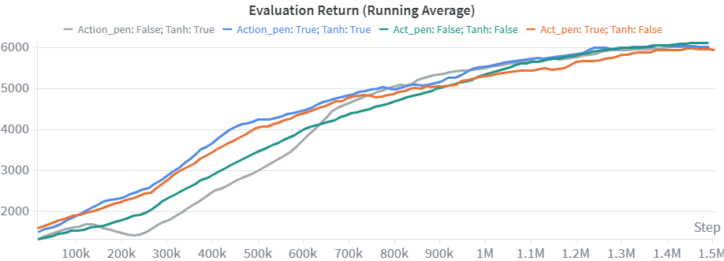

MPO Algorithm: Theory and Implementation Details
Maximum a Posteriori Policy Optimization (MPO) is an off-policy actor-critic algorithm based on an EM-style policy improvement procedure [1]. In my view, MPO is particularly interesting because it is often more robust to hyperparameter choices than many other off-policy methods, while also using a policy update that does not fit neatly into the usual categories of pure policy-gradient or value-gradient methods. In this post, I will summarize the main ideas behind MPO and give some details from my own implementation.
Motivation
This project originally started as part of a course at the Technical University of Munich. The initial goal was to explore whether sim-to-real transfer could be improved with meta-reinforcement learning. Since many current Meta-RL algorithms suffer from poor sample efficiency, the idea was to combine RL2 [2] with a strong off-policy learner, the MPO.
In practice, however, this combination did not work as well as expected. A major issue was the runtime. In order to update our recurrent actor unit we required repeated backpropagation through time, which made the training procedure very expensive and difficult to scale. For that reason, I decided to focus on MPO itself. Even independently of the original Meta-RL setting, MPO turned out to be a very interesting algorithm from both a conceptual and implementation perspective.
Setup
Throughout this post, I use the standard notation of a Markov decision process. States are denoted by \(s\), actions by \(a\), rewards by \(r\), and the policy by \( \pi(a \mid s) \). The critic estimates an action-value function \(Q(s,a)\). Ok, then let' s start:)
MPO follows the general actor-critic structure:
- Policy evaluation: learn a critic that approximates the action-value function.
- Policy improvement: update the actor using an EM-style objective.
Policy Evaluation
The critic can be trained using a variety of standard off-policy targets, including one-step temporal-difference learning, multi-step returns, or more advanced estimators such as Retrace. While DeepMind proposes using the Retrace algorithm in the original MPO paper, I used one-step TD learning in my implementation due to its simplicity, stability, and independence from sequential rollout storage.
In my implementation, the critic target is given by
$$ Q_{\text{target}} = r + m \gamma \, \mathbb{E}_{a' \sim \pi(\cdot \mid s')} \left[ Q_{\text{target}}(s', a') \right], $$
where \( m \) is a bootstrap mask that is zero for terminated transitions and one otherwise. The current critic estimate is
$$ Q_{\text{current}} = Q_\phi(s, a), $$
and the critic is trained by minimizing the mean squared error between target and prediction:
$$ \mathcal{L}_{\text{critic}}(\phi) = \left( Q_{\text{target}} - Q_{\text{current}} \right)^2. $$
→ View TD Learning implementation
MPO and Policy Improvement
The most interesting part of MPO is the policy improvement step. As already mentioned, MPO can not easily be categorized as a standard policy-gradient method. Instead, it performs policy improvement through an Expectation-Maximization-style procedure. Conceptually, MPO separates the improvement step into two phases:
- E-step: construct an auxiliary (non-parametric) action distribution \(q(a \mid s)\) that gives higher weight to actions with high critic values.
- M-step: fit the parameterized policy \( \pi(a \mid s) \) to that auxiliary distribution
Short Note on the EM Algorithm
Since MPO is motivated by an EM-style update, it is worth to briefly recall the general idea behind the EM algorithm. EM appears in several areas of machine learning, including Gaussian mixture models, latent-variable models, and variational inference. The key idea is to replace a difficult optimization problem by alternating between two simpler steps.
In the classical latent-variable setting, we would like to optimize a log-likelihood whose exact posterior is difficult to compute. EM introduces an auxiliary distribution and iteratively improves a lower bound on the original objective. The E-step updates the auxiliary distribution, while the M-step updates the model parameters given that distribution. For a more detailed discussion on the EM-algorithm, see Bishop (Chapter 9).
MPO does not use EM in exactly the same probabilistic way, but the analogy is very useful: first construct an improved non-parametric target distribution over actions, then fit the current policy to that target.
E-Step
In the E-step, MPO computes an auxiliary distribution over actions by reweighting the current policy with critic values. The goal is to improve the action distribution while keeping it close to the current policy \( \pi_i(a \mid s) \).
In the non-parametric variant of MPO, this is done by solving a constrained optimization problem: maximize the auxiliar distribution \( q(a \mid s) \), subject to a KL constraint and normalization.
Constrained Optimization Problem
$$ \begin{aligned} \max_q \quad & \int \mu(s)\int q(a \mid s)\,Q^{\pi_i}(s,a)\,da\,ds \\ \text{subject to} \quad & \int \mu(s)\,\mathrm{KL}\!\left(q(a \mid s)\,\|\,\pi_i(a \mid s)\right)\,ds < \epsilon, \\ & \int \int \mu(s)\ q(a \mid s)\,dads = 1 \end{aligned} $$
Here, \( \mu(s) \) denotes the state distribution approximated by replaybuffer samples. The KL constraint ensures that the updated distribution remains close to the current policy.
Lagrangian Formulation
To solve this constrained optimization problem, we form the Lagrangian
$$ \begin{aligned} \mathcal{L}(q,\eta,\gamma) =\;& \int \mu(s)\int q(a \mid s)\,Q^{\pi_i}(s,a)\,da\,ds \\ &+ \eta\left( \epsilon - \int \mu(s)\,\mathrm{KL}\!\left(q(a \mid s)\,\|\,\pi_i(a \mid s)\right)\,ds \right) \\ &+ \gamma ( 1 - \int\int \mu(s) q(a \mid s)\,dads) \end{aligned} $$
where \( \eta \ge 0 \) is the Lagrange multiplier for the KL constraint and \( \gamma \) enforces normalization. For more details on constrained optimization, see Nocedal, J. and Wright, S. J. (Chapter 12).
Taking derivatives w.r.t. \( q(a \mid s) \) and rearranging terms yields the closed solution of the auxiliar distribution and dual function
$$ q_i(a \mid s) \propto \pi(a \mid s, \theta_i)\, \exp\!\left( \frac{Q_{\theta_i}(s,a)}{\eta^*} \right) $$
$$ g(\eta) = \eta \epsilon + \eta \int \mu(s)\, \log \int \pi(a \mid s, \theta_i)\, \exp\!\left( \frac{Q_{\theta_i}(s,a)}{\eta} \right) \, da \, ds $$
Practical Approximation (Softmax over Samples)
In practice, the integral is intractable and approximated via sampling from the replaybuffer.
For each state sample we sample \(N\) actions \(a_i \sim \pi(\cdot \mid s)\) and compute:
$$ q_{ij} = q(a_i, s_j) = \frac{ \exp\!\left(\frac{Q(s_j, a_i)}{\eta}\right) }{ \sum_{l=1}^{N} \exp\!\left(\frac{Q(s_j, a_l)}{\eta}\right) }. $$
This corresponds to a softmax over sampled Q-values and is the form used in practical implementations as proposed in [5].
The dual function can be mimimized in practice by a few steps of gradient descent by the following equation:
$$ \eta = \arg\min_{\eta} \left( \eta \epsilon + \eta \sum_{j=1}^{K} \frac{1}{K} \log \left( \sum_{i=1}^{N} \frac{1}{N} \exp\!\left( \frac{Q(s_j, a_i)}{\eta} \right) \right) \right) $$
Action Penalty
In continuous control, sampling from our policy \( \pi(a \mid s) \) can produce out-of-bound actions, for which the critic may assign unreliable values because those samples were never observed during training. This can destabilize learning. To mitigate this issue, I included an additional out-of-bounds action penalty in the E-step, following the multi-objective MPO implementation [6]. Hence, the action penalty is actually not part of the original MPO.
First, we compute the negative quadratic distance of the action and the action bound:
$$ \Delta(a) = a -\mathrm{clip}(a, a_{\min}, a_{\max}) $$
$$ c(a) = - \lVert \Delta(a) \rVert^2 $$
After that, we use the formula of the original E-step and compute a new auxiliar distribution for the action penalty \( q_{\text{pen}}(a \mid s) \):
$$ q_{\text{pen}}(a \mid s) = \frac{ \exp\left(\frac{c(a)}{\eta_{\text{pen}}}\right) }{ \sum_{i} \exp\left(\frac{c(a_i)}{\eta_{\text{pen}}}\right) } $$
The term "action penalty" is somewhat misleading, since we do not add an explicit penalty term to the reward or the critic objective. Instead, we mix two sets of E-step weights. We combine both weightings via a mixing factor \( \lambda \) and renormalize the result, yielding the final auxiliary distribution \( q(a\mid s) \).
$$ q(a \mid s) = (1 - \lambda)\, q_{\text{MPO}}(a \mid s) + \lambda\, q_{\text{pen}}(a \mid s) $$
$$ q(a \mid s) \leftarrow \frac{ q(a \mid s) }{ \sum_i q(a_i \mid s) } $$
Results of Action Penalty

From the learning curves in, we observe that both tanh-squashing of the policy mean and the out-of-bounds action penalty improve early training, leading to faster return increases and improved sample efficiency. The best-performing configuration combines tanh on the mean with the action penalty, while the second-best variant uses the action penalty without tanh as activation function. This indicates that incorporating the penalty term in the E-step stabilizes learning and accelerates early progress. After roughly one million environment steps, however, all variants converge to a very similar performance level. A plausible explanation is that the penalty has the strongest impact early on, when policy variance is high and out-of-bound samples occur more frequently. As training progresses, the policy becomes increasingly deterministic, making such samples rare and reducing the influence of the penalty term.
→ View E-Step implementation
M-Step
In the M-step, the policy is updated to match the auxiliary distribution while remaining close to the target policy to ensure stability. This is achieved by maximizing a likelihood objective under a KL divergence constraint, resulting in a constrained optimization problem.
This constrained problem can be written the form as:
$$ \begin{aligned} \max_{\pi} \quad & \int \mu_q(s)\int q(a \mid s)\,\log \pi(a \mid s,\theta)\,da\,ds \\ \text{s.t.} \quad & \int \mu_q(s)\, \mathrm{KL}\!\left( \pi_{\text{target}}(a \mid s,\theta_i)\,\|\,\pi(a \mid s,\theta) \right)\,ds \le \epsilon \end{aligned} $$
Introducing a Lagrange multiplier for the KL constraint and approximating the expectations with Monte Carlo samples yields $$ \max_{\theta}\min_{\alpha > 0}\; L(\theta,\alpha) = \sum_j \sum_i q_{ij}\,\log \pi_{\theta}(a_i \mid s_j) + \alpha \left( \epsilon_{\pi} - \frac{1}{K}\sum_j \mathrm{KL}\!\left( \pi_{\text{target}}(a \mid s_j)\,\|\,\pi_{\theta}(a \mid s_j) \right) \right). $$
The original paper proposes a decoupled version of the M-step, in which the policy update is split into two separate objectives. Concretely, the neural network parameters \(\theta\) are optimized to maximize one objective for updating the policy mean while keeping the covariance fixed to that of the target policy, and a second objective for updating the policy covariance while keeping the mean fixed to that of the target policy. Correspondingly, separate KL constraints are imposed for the mean and covariance updates. When using a diagonal covariance matrix, these KL terms can furthermore be evaluated independently for each action dimension, allowing for finer control over the size of the update [2].
$$ \begin{aligned} \max_{\theta}\min_{\eta_\mu > 0,\eta_\Sigma > 0}\; L(\theta,\eta_\mu,\eta_\Sigma) =\;& \sum_{j=1}^{K}\sum_{i=1}^{N} q_{ij}\,\log \pi_{\theta}(a_i \mid s_j;\Sigma=\Sigma_{\text{target}}) \\ &+ \sum_{j=1}^{K}\sum_{i=1}^{N} q_{ij}\,\log \pi_{\theta}(a_i \mid s_j;\mu=\mu_{\text{target}}) &+ \eta_\mu \bigl(\epsilon_\mu - C_\mu\bigr) + \eta_\Sigma \bigl(\epsilon_\Sigma - C_\Sigma\bigr) \end{aligned} $$
with
$$ C_\mu = \frac{1}{K}\sum_{j=1}^{K} \mathrm{KL}\!\left( \pi_{\text{target}}(a \mid s_j)\,\|\,\pi_{\theta}(a \mid s_j;\Sigma=\Sigma_{\text{target}}) \right) $$
$$ C_\Sigma = \frac{1}{K}\sum_{j=1}^{K} \mathrm{KL}\!\left( \pi_{\text{target}}(a \mid s_j)\,\|\,\pi_{\theta}(a \mid s_j;\mu=\mu_{\text{target}}) \right) $$
Unlike the E-step, the Lagrangian does not admit a closed-form solution. Therefore, we solve this constrained optimization problem by alternating min-max optimization where we first fix our lagrangian multipliers \( \eta \) and optimise for \( \theta \), and then fix \( \theta \) and solve for \( \eta \).
→ View M-Step implementation
Further Implementation Details
The following additional implementation choices were made:
- Actions were clipped to the valid bounds of the environment. Instead of applying tanh-squashing directly to the sampled actions, I experimented with applying tanh to the mean of the policy distribution, as shown in the plot above.
- A diagonal covariance matrix was used, since the Ant environment does not strongly require modeling correlations between action dimensions.
- The target networks were updated every 200 gradient steps.
References
- Abdolmaleki, A., Springenberg, J. T., Tassa, Y., Munos, R., Heess, N., and Riedmiller, M. Maximum a Posteriori Policy Optimisation. ICLR, 2018. arXiv:1806.06920.
- Y. Duan, J. Schulman, X. Chen, P. L. Bartlett, I. Sutskever, and P. Abbeel, “RL²: Fast Reinforcement Learning via Slow Reinforcement Learning,” 2016. [Online]. Available: https://arxiv.org/abs/1611.02779
- Bishop, C. M. Pattern Recognition and Machine Learning. Springer, 2006.
- Nocedal, J. and Wright, S. J. Numerical Optimization. 2nd ed., Springer, 2006.
- Abdolmaleki, A., Springenberg, J. T., Degrave, J., Bohez, S., Tassa, Y., Belov, D., Heess, N., and Riedmiller, M. Relative Entropy Regularized Policy Iteration. arXiv:1812.02256, 2018.
-
Google DeepMind.
Acme:
acme/tf/losses/mpo.py. GitHub repository, master branch, accessed 5 April 2026.